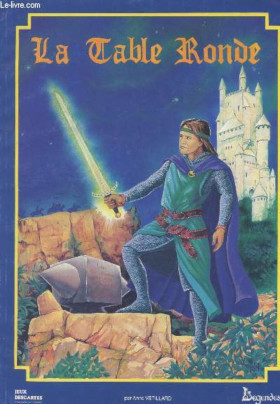

Août/septembre 2022
Tables#
Légendes : le multi-bide du JDR français#
Ce qui suit est une analyse personnelle de quelqu'un qui a vécu les événements en tant que MJ et joueur. Je ne dis pas que mon expérience est représentative mais parfois, il faut mettre les pieds dans le plat dans une France qui n'ose plus regarder ni ses échecs, ni ses succès en face.
Légendes, le jeu injouable#
C'est l'histoire d'une déception.
Quand j'étais jeune,
J'avoue avoir été refroidi et être resté perplexe devant la réelle complexité du jeu. D'un autre côté, j'avais été prévenu.

Le jeu me paraissait injouable.
Plus tard, je me suis quand même procuré
Cela revient depuis plusieurs fois dans ce blog, mais à l'époque, peu de gens avaient vraiment le temps ou les compétences d'adapter des suppléments d'un jeu pour un autre. La belle pochette de pochette de

Plus tard, dans une convention de jeux à Morestel, je me décide à jouer à
Sans parler de la longueur du processus de création des personnages, une fois à la table, le bilan fut désastreux : après 6 heures de jeu, nous n'en sommes toujours qu'au début du scénario. Nous avons principalement joué un combat d'une minute de jeu (60 secondes) en 4h30 ! Hé oui, le combat seconde par seconde... C'était trop pour moi.
En fait, à l'époque, que ce soit
Car, quoiqu'on puisse en penser, les points de repères du joueur des années 80 dans le monde celtique ne sont pas très nombreux.
La difficulté du genre historico-magique#
Ce genre "historico-magique" est très intéressant intellectuellement, mais très compliqué à faire jouer et à jouer dans les deux dimensions suivantes :
- Les joueurs n'ont pas forcément la connaissance historique du monde ;
- Ces derniers n'ont pas non plus la connaissance de l'interprétation de la magie qui est faite par le jeu.
Le travail du MJ est d'autant plus complexe. Si j'étais cynique, je dirais que ce genre a un côté "prof d'histoire" ou "prof de français".
Quand on lit certains de ces jeux, on a l'impression de lire les bouquins de la série "La vie quotidienne".

C'est vrai pour le monde des
Attention, je ne mets pas en cause les auteurs (notamment Jean-Marc Montel) qui ont vraiment accompli un morceau de bravoure...
Mais quid de leur travail ? Où est-il ? Nulle part ! Descartes se fait racheter et puis, pouf, le contenu disparaît dans les limbes ! Il n'est même pas publié en PDF comme les vieilles versions de
Mais heureusement que les américains ne font pas la même chose ! Sinon , nous ne jouerions plus à
Pour en revenir à l'approche de
Les trois dimensions de l'accessibilité du jeu#
On pourrait proposer une grille d'analyse des jeux basée sur la capacité des joueurs à accéder facilement à l'univers :
- Dans sa dimension pragmatique : est-ce que le joueur peut rapidement "intuiter" des postures compatibles avec l'univers ?
- Dans sa dimension magique : est-ce que le joueur peut rapidement intuiter ce qui est faisable par la magie ?
Avec ces deux dimensions, nous pourrions définir une grille de lecture de l'accessibilité du monde au joueur, un genre de ticket d'entrée pour les joueurs.
Je vais rajouter une troisième dimension qui me tient à coeur : le pourquoi. Pourquoi jouer dans ce monde ? Pourquoi est-ce intéressant ? Quel type de personnages est intéressant à vivre dans ce monde ? Quelle est la grande motivation des joueurs, de tous les joueurs ?
Le jeu historique est vraiment le jeu pour qui cette question est la plus naturelle : certes, la période révolutionnaire est intéressante historiquement parlant, mais est-il intéressant de jouer des acteurs de cette période historique quand on n'est ni un prof d'histoire, ni un prof de français ?
Je vais nommer cette troisième dimension : la motivation fondamentale, sous-entendu, "pour jouer".
La quatrième dimension sera la complexité du système de jeu qui est quand même un paramètre important dans l'équation.
Nous pouvons définir une échelle à trois valeurs :
- Facile : 3 points,
- Moyenne : 2 points,
- Difficile : 1 point,
- Très difficile : 0 points.
Ensuite, faisons les calculs et regardons les résultats !
| Jeu | Access. Monde | Access. Magie | Motivation fondamentale | Complexité jeu | Accessibilité |
|---|---|---|---|---|---|
| Cthulhu | Facile (f)(3) | Facile (g)(3) | Facile (h)(3) | Facile (3) | 4.00 |
| Star Wars | Facile (d)(3) | Facile (d)(3) | Facile (e)(3) | Facile (3) | 4.00 |
| D&D | Facile (a)(3) | Facile (b)(3) | Facile (c)(3) | Difficile (1) | 3.30 |
| Esoterrorists | Facile (f)(3) | Moyenne (l)(2) | Facile (m)(3) | Moyenne (2) | 2.50 |
| Pendragon | Moyenne (i)(2) | Facile (g)(2) | Facile (r)(3) | Facile (3) | 2.50 |
| Runequest | Moyenne (n)(2) | Facile (b)(2) | Facile (c)(3) | Moyenne (2) | 2.25 |
| Alternity Dark Matter | Facile (f)(3) | Moyenne (l)(2) | Moyenne (o)(2) | Moyenne (2) | 2.25 |
| Méga | Moyenne (p)(2) | Moyenne (l)(2) | Facile (q)(3) | Moyenne (2) | 2.25 |
| Ars Magica | Moyenne (i)(2) | Moyenne (j)(2) | Facile (k)(3) | Difficile (1) | 2.00 |
| Hurlements | Moyenne (i)(2) | Difficile (s)(1) | Difficile (t)(1) | Facile (3) | 1.75 |
| Légendes des 1001 nuits | Difficile (u)(1) | Difficile (v)(1) | Difficile (w)(1) | Très difficile (0) | 0.75 |
| Légendes Celtiques | Difficile (u)(1) | Difficile (v)(1) | Difficile (w)(1) | Très difficile (0) | 0.75 |
Explications :
| Lettre | Explication |
|---|---|
| a | Imaginaire médiéval-fantastique très imprécis |
| b | Tout est possible |
| c | Aventures, pouvoir, richesse |
| d | Monde de Star wars, avec la Force comme magie |
| e | Lutter contre l'empire |
| f | Monde contemporain |
| g | La magie est essentiellement réservée aux PNJs donc on peut dire que le jeu "évite" un peu le problème |
| h | Lutter contre les horreurs |
| i | Le Moyen-Age |
| j | Le jeu est conçu autour de la magie |
| k | Etre un mage |
| l | La magie et les pouvoirs psy |
| m | Lutter contre les esoterroristes |
| n | Glorantha n'est pas complètement intuitif comme monde |
| o | Pas de grands ennemis |
| p | Monde space-opera un peu spécial |
| q | Etre un Méga |
| r | Chevalerie |
| s | Magie peu claire centrée autour des lycanthropes au Moyen-Age |
| t | Jouer des gens dans une caravane, mais quelle est la motivation (l'initiation ? mais n'est-ce pas un peu prétentieux ?) |
| u | Monde compliqué à appréhender pour les joueurs |
| v | Univers magique non intuitif |
| w | Ne pas jouer des héros mais des personnages ordinaires |
Même pour un jeu comme

Notons que
La double peine ?#
Sans vouloir faire de mauvais esprit, jouer à
- Les règles sont hyper-compliquées ;
- L'univers a une accessibilité faible, voire très faible, pour les joueurs.
Mais pourquoi cumuler les deux difficultés ? Cette question m'a souvent turlupiné.
Mettons que je sois créateur de JDR : je fais un effort sur l'univers, supposons la Gaule. Déjà le jeu ne s'adressera qu'à une frange très particulière de joueurs, des joueurs intéressés par vivre des aventures dans un autre temps, légèrement teinté de magie, une magie qui plus est vue comme optionnelle...
Bref, comme je suis très malin, je vais, en plus, choisir un système de jeu hyper-complexe et "simulationniste" ? Soit c'est de la prétention incroyable, soit de la stupidité... Ou alors un peu des deux.
Sans doute le problème est-il lié au sujet du "play-testing". Quand un jeu sort aux US, il aura été testé et éprouvé par beaucoup de joueurs. D'où les multiples éditions du jeu, pour prendre en compte les retours du terrain. D'où un business récurrent de la vente des éditions successives (héhé pas fous les gars). D'où la nécessité de suivre la gamme... en ne faisant pas travailler que ses potes... Oui parce que dans notre monde français, il faut le reconnaître, nous sommes quand même dans le copinage beaucoup plus que dans la compétence.
En France, nous sommes trop forts tout de suite. Nous publions des jeux parfaits qui n'ont pas besoin d'une seconde édition ; ou alors 20 ans après quand les jeunes d'autrefois sont devenus des cadres nostalgiques et lisent les beaux bouquins très chers de JDR dans leur lit le soir en ayant peur de les abîmer.
[Peut-être que
Conséquence pour
Premières Légendes, le désastre#
Poursuivons.
La série
- Elle reprend la marque
Légendes , qui avait quand même une connotation négative de jeu injouable ; - Elle ajoute le terme Premières qui produit une réelle catastrophe marketing.

Là où
En plus, la couverture est hideuse !
L'effet est donc incroyablement percutant : Premières Légendes, c'est comme le jeu hypercomplexe, mais pour les blaireaux (sous-entendu les non rôlistes).
Il aurait fallu, je pense :
- Trouver un autre nom,
- Trouver un autre système de jeux, pour rendre plus accessible ces univers...
Bon, je sais, ce que je propose ressemble un peu à l'approche de
Ce qui est incompréhensible, c'est que Descartes re-signe pour trois produits des plus confus.
-
La Table Ronde sort en 1986, soit un an après la parution dePendragon aux Etats-Unis, la même année que la traduction en français dudit jeu chez Gallimard (un travail de cochon). Le jeu qui n'a rien à voir avec la Table Ronde, aurait dû s'appeler Légendes du Moyen-Age. Il se passe au XIIIème siècle et est quand même très historique... -
Légendes Celtiques en 1987, rajoute à la confusion, en particulier des suppléments : est-ce qu'un upplémentLégendes Celtiques est utilisable avec(Premières) Légendes Celtiques sachant que le système de jeu est "presque" compatible mais pas complètement ? Mais pourquoi se lancer dans un tel imbroglio ? Parfois, il faut savoir abandonner une marque... -
Légendes de la Vallée des Rois en 1988 apporte un peu d'air frais à la série grâce au travail de Christian Caroli. Mais là encore, même si le produit est travaillé, l'accessibilité du jeu est super super faible, tellement que cela signera l'arrêt de mort de la gamme.
Encart positif :
- Si vous voulez jouer en 2022 des chevaliers, jouez à
Pendragon . - Si vous voulez jouer des gaulois, malheureusement, ça va être chaud : regardez sur la scène des JDR indie des fois que quelqu'un ait eu l'idée d'adapter
Légendes à un moteur de jeu jouable ; ou alors Jouez à GURPS Celtic Myths.

- Si vous voulez jouer dans le monde des Pharaons, je vous conseille GURPS Egypt. Ou alors quelqu'un devra faire l'effort d'adapter le contenu de M. Caroli à un système de jeu moins débile.

Sur ce dernier jeu, ne nous méprenons pas, je pense que la qualité du contenu français est meilleure, mais la jouabilité est bien moindre. Donc, il faut faire un choix :
- Soit ceux qui possèdent les droits de
Légendes de la Vallée des Rois font un reboot avec le même contenu édité autrement, par quelqu'un d'autre, et pour un autre système de jeu, jouable, celui-là (et pourquoi pas pour plusieurs... oulala, c'est chaud !), sachant que les joueurs d'aujourd'hui sont encore moins sensibles à l'univers ; - Soit le travail peut rester dans les limbes, et on joue à autre chose ou alors on joue à GURPS en anglais.
Moi, j'ai un travail full time, donc sur ce coup-ci, ce n'est pas moi qui vous aiderait.
Blague à part.
La gamme
En fait, c'est tout le contraire chez les américains - alors que souvent, le jeu est l'oeuvre d'une seule personne (au moins au début) :
- Des jeux play-testés,
- Une accessibilité travaillée, et retravaillée à chaque édition (aussi parce que les joueurs changent, et donc les demandes du "marché" changent),
- Un suivi avec des suppléments, ce qui veut dire que les gens croient au jeu et que le jeu a une vraie "part de marché" (oulala le gros mot en France, berk !).
Bref#
Je suis peut-être négatif mais nous avons là l'exemple type de la prétention française :
- Des jeux très complexes,
- Dans des univers difficiles d'accès pour les joueurs,
- Aucun suivi (les français n'aiment pas le support après-vente),
- Un marketing très nase,
- Et surtout... une bonne grosse dose de prétention de faire mieux que les ricains, parce que, attention, nous on est cultivés et on sait jouer dans des mondes historiques de profs d'histoire (avec un peu de magie, mais pas trop quand même sinon, c'est trop de la superstition, ça fait pas assez rationnel et cultivé),
- Une compréhension faible des règles de base du business (faire plaisir à ses clients et non à ses copains).
Parfois, je trouve que nous, les français, sommes vraiment des gros lourds prétentieux, des idéologues. Pas étonnant que nous soyons détestés à l'étranger.
Et que nous jouions à des jeux américains...
A la recherche du meilleur système (simple) de JDR (2)#
J'ai un peu modifié mon programme de stats de combats pour qu'il prenne en compte les modificateurs de type 2d6+2 ou 1d10-1. Mon but était de vérifier que le système d6 est bien moins avantageux pour celui qui qui a un modificateur plus faible qu'un système linéaire d12. Vous me direz, c'est évident. En fait oui.
Prenons le cas d'un combat avec COMP+2d6+Talent contre un monstre ayant COMP+2d6. Il s'agit donc de comparer les courbes de deux entités ayant 2d6+A et 2d6+B et de les comparer avec le cas où l'on utiliserait un d12.
| Joueur 1 | Joueur 2 | Proba Jet 1 > Jet 2 | Proba Jet 1 ≤ Jet 2 |
|---|---|---|---|
2d6 |
2d6+4 |
10% |
90% |
1d12 |
1d12+4 |
19% |
81% |
Soit près de deux fois plus de chances de réussir dans le cas du d12.
Dans le cas d'une victoire ou égalité :
| Joueur 1 | Joueur 2 | Proba Jet 1 ≥ Jet 2 | Proba Jet 1 < Jet 2 |
|---|---|---|---|
2d6 |
2d6+4 |
16% |
84% |
1d12 |
1d12+4 |
25% |
75% |
C'est complètement différent.
Je ne vais pas me paraphraser quand à l'analyse des jeux D6 mais on comprend pourquoi les systèmes d20 ou d100 se sont imposés : parce qu'ils sont plus fair play et n'offre pas les phénomènes de déformation des coubes à nd6.
Notons que même pour les jets sous la COMP+Talent ou la COMP+Magie, et même si le score total est de 11 ou plus, 12 étant toujours un échec, il reste une chance sur douze (8%) d'échouer. Alors que le pourcentage de chances de faire un double 6 sur 2d6 est de 1/36 soit à peine 3%.
Froika! risque donc d'être un système d12 qui sera donc compatible avec Troika! et AFF mais en plus linéaire. Il reste juste à limiter la COMP à la création du perso. Je trouve 6+1d6 trop permissif, 3+1d3 trop punitif, il reste 6+1d4 ou 6+1d3. A voir.
A la recherche du meilleur système (simple) de JDR (1)#
Gestion des tests simples#
Les tests simples sont utilisés pour les tests de compétences. Il faut tester le PJ pour savoir s'il réussit ou pas.
Selon les jeux, la compétence testée (parfois appelée caractéristique, talent, ou autre) est soit une constante (par exemple 45% ou 12), soit quelque chose de variable (par exemple 4d6 ou 1d8).
Le test peut prendre deux une des deux grandes formes suivantes :
- Si la compétence est une constante, le jet de dés permet de se mesurer à elle : il faut faire soit inférieur ou égal à la compétence (courant), soit supérieur ou égal (plus rare).
- Si la compétence est une variable, le MJ doit déterminer un facteur de difficulté : le jet devra donc battre ce facteur, souvent supérieur ou égal à ce dernier.
Généralement, les systèmes de JDR gèrent ce cas sans problème notable. Il faut juste s'assurer que les statistiques ne soient pas tordues (voir l'article sur les systèmes D6).
Il faut noter une différence importante sur les tests à base de compétence : le test de la compétence constante n'oblige pas le MJ à déterminer un facteur de difficulté dans la plupart des cas. Des bonus et malus peuvent être appliqués dans des cas exceptionnels mais le joueur connaît sa chance de réussite de base dans tous les cas.
Par exemple, sur un système en pourcentage, si je possède 60% dans une compétence, je comprend immédiatement mes chances de réussite, le d100 étant, de plus, une distribution statistique linéaire (ce qui n'est pas le cas de 3d6 par exemple).
Les systèmes à seuil de difficulté ont le désavantage de faire appel au MJ pour toutes les situations, ce qui, à la longue, peut entraîner un sentiment d'arbitraire chez les joueurs.
J'avoue que personnellement, je préfère les jets contre des scores de compétences fixes. Comme j'évite les bonus/malus, sauf cas exceptionnel ou scène cruciale, le jeu va plus vite.
Les deux grands problèmes à résoudre#
En fait, à mon avis, les deux grands problèmes de conception d'un système de JDR sont les suivants :
- Équilibrer les combats (mêlée et à distance entre les joueurs et les adversaires),
- Équilibrer la magie (ou les pouvoirs psy), à la fois entre les joueurs (pour un certain équilibre du groupe) et avec les adversaires.
Certains jeux comme
D'autres jeux comme
D'autres jeux comme
Dans les nouveaux moteurs de jeux simplifiés (
La façon de Dungeoneer de résoudre le problème#
Dans ma recherche, après avoir traduit et compressé les règles de

L'extension concerne deux dimensions :
- Des talents (compétences avancées ou advanced skills),
- Un système de magie.
Les talents fonctionnent comme des bonus, par exemple un talent de combat à l'épée de 2 donnera un bonus de 2 lors du combat contre l'adversaire. Ainsi, le joueur tirera COMP+2D6+2 contre un adversaire.
Le joueur a COMP points à répartir dans ses talents.
La système de magie est assez malin et en deux temps :
- A la création du PJ, le joueur doit choisir de combien de points il ampute sa
COMPpour créer son score de magie (pris sur les points de compétences avancées). Supposons que j'ai tiré1d6+6pour maCOMPet que j'obtienne10. Je décide d'affecter4points à la magie. J'aurais doncCOMP=6etMagie (4). Pour réussir un sort, je devrai donc faire un jet sous maCOMP+Magie, ce qui est maCOMPinitiale. - Suivant la difficulté du sort, je perdrai un certain nombre de
PdV. - Cela signifie aussi que pour toutes mes autres compétences non magiques, ma
COMPrestera à6et donc j'aurai moins de chances de réussite structurellement. - Le nombre de points restant pour les autres talents est de
COMP-Magie= 10-4=6ce qui équilibre la magie avec les autres compétences.
Évidemment, dans ce système, on peut se poser la question si faire un jet de 2d6 sous la COMP+Compétence avancée n'est pas un peu facile. Il est précisé dans le jeu qu'un 12 est toujours un échec, mais effectivement, on retrouve l'aspect un peu "facile" de Fighting Fantasy original.
La façon Troika!#
Troika! prend une approche encore plus simple sur deux dimensions :
- La
COMPest tirée avec1d3+3seulement, ce qui rend les jets sous laCOMP+Compétence avancée(beaucoup) plus difficiles (trop sans doute) ; - La connaissance d'un sort est un talent comme un autre (même si l'utilisation des sorts fait perdre des points de vie).
Il y a certains avantages à ce système :
- Il est encore plus simple que celui de
Dungeoneer ; - Il permet à tous les archétypes de personnage d'avoir des talents dont des sorts, sans distinction ;
- Il est basé sur un système de points de compétences à répartir qui ne dépend pas de la
COMPet donc, qui ne possède cet effet "double-peine" qui est qu'uneCOMPfaible implique une restriction sur les talents à la création du personnage (comme dansDungeoneer ).
Les règles proposent de créer des archétypes à partir de 10 points de talents, même si, dans le livre de base, certains archétypes sont créés à partir de 13 voire 14 points de talents.
Une grille d'analyse hyper-simple des moteurs de JDR#
Cela fait donc une grille d'analyse à trois dimensions très simple :
| Dimension | Enjeu | Difficulté de conception |
|---|---|---|
| Tests simples | Ne pas faire intervenir le MJ pour des facteurs de difficulté à chaque action | Moyen |
| Équilibre des combats | Entre un PJ et un adversaire (combat en mêlée et à distance) | Facile |
| Équilibre de la magie/pouvoirs psy | Dans la dimension, équilibre des PJs ensemble, et contre les adversaires | Difficile |
Application à quelques jeux#
Prenons les notes possibles suivantes :
A: très bien pris en charge ;B: moyennement pris en charge ;C: mal pris en charge ;I: inapplicable, le jeu a évité le problème.
| Jeu | Tests simples | Equilibre combats | Equilibre magie / psy | Complexité |
|---|---|---|---|---|
| CoC | A |
A |
I |
2 |
| D&D | A |
A |
A, B ou C suivant les éditions |
3 |
| GURPS | A |
A |
A |
3 |
| FF | A |
A |
I |
1 |
| AFF Dungeoneer | A |
A |
A |
1 |
| Troika! | A |
Sans doute B |
A |
1 |
| Ars Magica | A |
A |
I |
3 |
| Risus | B |
B voir ici |
B |
1 |
| Mini6 | B |
B voir ici |
B |
1 |
Bon,
NeoMega, ça roule#
Ahaha, je travaille sur
NeoMega pour Froika!#
Bon, la réflexion avance. Dès que j'ai fini la traduction de
Même si j'aime beaucoup l'univers et le travail remarquable fait dans le cadre de l'Encyclopédie Galactique, je trouve que de nombreux points n'ont pas été exploités.
Tout d'abord, la timeline décrite dans
Ensuite, le fait de pouvoir transiter est déjà quelque chose de potentiellement déstabilisant pour une nation galactique (possibilité de vois des armées débarquer par des tétraèdres), mais le fait de pouvoir se transférer dans quelqu'un d'autre pose un problème de sécurité galactique. Il est donc obligatoire que certains états aient, à un moment, considéré la Guilde comme une menace à éliminer. Ou alors, il était obligatoire que certains renégats aient une envie folle de prendre le contrôle de royaumes ou de l'AG.
Je me souviens des livres de Philip Dick : quand un monde est empli de gens ayant des pouvoirs psy, toute la "texture" du monde est différente. Je pense que les potentialités de
C'est pourquoi, je vais travailler en ce sens, un genre de réinterprétation de l'univers. Possible que ça ne donne pas grand chose, mais on sait jamais.
Langue de pute#
J'ai donc fait une synthèse des scénarios des vieux Casus (première série) pour retrouver principalement tout ce qui concernant
J'ai aussi concaténé tout ce que je trouvais sur
J'ai (re)découvert pas mal de choses :
- L'indécision totale du journal et son incapacité à suivre un sujet très longtemps.
- L'incompréhensible soutien à
Simulacres , ce jeu complètement merdique, malgré les efforts démentiels de son auteur pour l'imposer de force et en mettre de partout, alors qu'à l'époque, les systèmesD&D etAdC étaient les plus pratiqués. Au lieu de faire des pages et des pages pourSimulacres , pourquoi ne pas traduire les scénarios pour les différents systèmes de jeux ? Avec le recul, on voit que l'Heroic Fantasy à laD&D ou l'horreur lovecraftienne à la CallOf Cthulhu passent par tous les systèmes... - L'incompréhensible spécialisation des scénarios à un système de jeu. Par exemple, tout scénario
D&D aurait pu avoir sa traduction pourRunequest ouWarhammer . Je crois avoir vu cela dans un seul numéro de Casus. Et comment font les joueurs ? Ils font la traduction seuls ? Ils sont supposés connaître tous les jeux et posséder tous les suppléments ? Hé non, ils sont supposés les jouer avecSimulacres ! - L'hyperfocalisation sur
Shadowrun qui n'est tout de même pas le jeu du siècle. - Des scénarios sur des jeux de troisième zone, hyper-spécialisés, impossibles à trouver en boutique à l'époque et tellement spécifiques qu'ils en étaient impossibles à adapter.
- Un soutien absolu à
Rêve de Dragon que, franchement, personne ne jouait autour de moi. Bon, OK, Denis Gerfaud est sympa, mais quand même. - Je m'étais toujours demandé pourquoi
Pendragon n'avait pas percé en France, mais c'était parce que tout le monde voulait faire la promo desLégendes de la Table Ronde qui, vu de moi, fut un bide complet (la traduction nase de Gallimard en 1986 n'a pas aidé). Dans les Casus première version, à un certain moment, on en arrive un moment au comble : l'auteure du jeu LDLTR (Anne Vétillard) écrivant des scénarios pourPendragon ! On croît rêver ! - Pourquoi avoir gardé des pages sur les wargames ? Il y avait des lecteurs ?
- Et la pub... Mon dieu, tant de pubs...
Au final, quand on se tape tous les Casus première mouture, on comprend comment, petit à petit, le public a fui. Sur certains numéros, il n'y a rien à garder, même du côté des scénarios.
Enfin, il reste certains scénarios pas mal, mais ils sont souvent des mêmes auteurs (notamment Denis Beck et Tristan Lhomme, j'aime bien aussi Jean Balczesak)...
Tempus fugit.
Un été tranquille#
Bon, pas mal de choses :
- Je poursuis la traduction de
Troika! avec une approche un peu personnelle des illustrations. Mais c'est lent. - J'ai pas mal travaillé sur la comparaison entre les systèmes de jeu de
Fighting Fantasy , celui deAdvanced Fighting Fantasy 1e , et celui deTroika! . Ce n'est pas encore prêt mais c'est assez intéressant. - En parallèle, je travaille sur l'adaptation du système
AFF àMéga , pour avoir quelque chose plus élaboré que ça mais quand même hyper-simple. - J'ai découvert
Ars Magica pendant les vacances notamment avec la deuxième édition de 1989 de Lion Rampant (avant les versions White Wolf). J'avoue que ce jeu est assez fascinant, un peu dans le genre du jeu de rôle que j'aurais toujours voulu jouer au Moyen-âge. J'y reviendrai. - J'ai trouvé une bonne occase de
D&D 4e DMG sur eBay. Je suis content. - Je me suis fait une compil des scénarios pour
Méga des vieux Casus. Je pense à la faire imprimer par Lulu. J'ai fait pareil pour les scénarsCthulhu . - J'ai travaillé sur une page de Links en anglais qui vient d'un refresh de cette page.
Au fait,